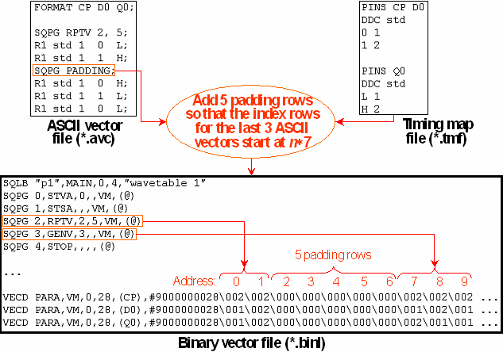

The PADDING Instruction
The PADDING instruction is only used in connection with the vector generating instructions RPTV and MRPT. It serves to tell the vector translation how many ASCII vectors belong to the vector generating instruction, and is required for that purpose. In the case of an RPTV or MRPT instruction, you must take care that the number of ASCII vectors between, for example, RPTV and the following PADDING instruction agrees with the number of vectors specified in the <number_of_vectors> parameter of RPTV.
The PADDING instruction is a special case of the SQPG command. All the other instructions following the SQPG keyword are transferred into the sequencer program of the binary vector file. But the PADDING instruction has no counterpart in the binary vector file. It only supplies control information to the vector translation.
The name of the PADDING instruction refers to the constraints which the physical layout of the storage medium imposes on the address of the start row for the waveform DC/DC power units of the vector generating instructions. The layout of the Vector Memory, where the index array is usually stored, requires that the address of this start row be a multiple of 7 (the array can also be stored in the Sequencer Memory, in which case the address of the start row must be a multiple of 8). Therefore, if the number of ASCII vectors between the vector generating instruction and its associatedPADDING instruction is not directly divisible by 7, the vector translation will insert additional "padding" values into the download commands so that the array rows corresponding to any ASCII vectors after thePADDING instruction start at a legitimate address. This is the only purpose of these padding rows; they will be ignored when the pattern is executed.
Do not confuse this kind of padding, which only affects the index array in the Vector (or Sequencer) Memory, and not the ASCII vectors, with the ASCII vector padding which occurs in connection with x-mode factors > 1. The former has no influence whatsoever on the waveforms that are sent to the DUT, but the latter has; see X-Mode ASCII Vector Padding.
The following figure illustrates the function of the PADDING instruction for an x-mode factor of 1 (in contrast with the figure in Example 1):

You can see how the insertion of the 5 padding rows ensures that the index rows for the last 3 ASCII vectors start at address 7, which is the start row for the vectors of the GENV instruction.
The vector translation checks the existence and correct location of thePADDING instruction. If the instruction is not present, or if the number of ASCII vectors it associates with the RPTV or MRPT instruction does not match the <number_of_vectors> parameter, the vector translation will terminate with an error message. The x-mode factor is taken into account. For example, if the x-mode factor is 2, and the <number_of_vectors> parameter is set to 4, the vector translation will be canceled if the number of ASCII vectors between RPTV or MRPT and the PADDING instruction is 6 instead of 8.
You can cause the vector translation to correct the <number_of_vectors> parameter according to the number of the associated ASCII vectors with the v2b option -xa. For an x-mode factor of 2 and a <number_of_vectors> value of 4, the option would cause a correction of this value to 3 if only 6 ASCII vectors are placed between RPTV or MRPT and the PADDING instruction. This option can be combined with the -xpi option (for which see X-Mode ASCII Vector Padding).
Functional changes
- Introduced before SmarTest 6.3.2
- SmarTest 7.0.3: Removed the MTST instruction